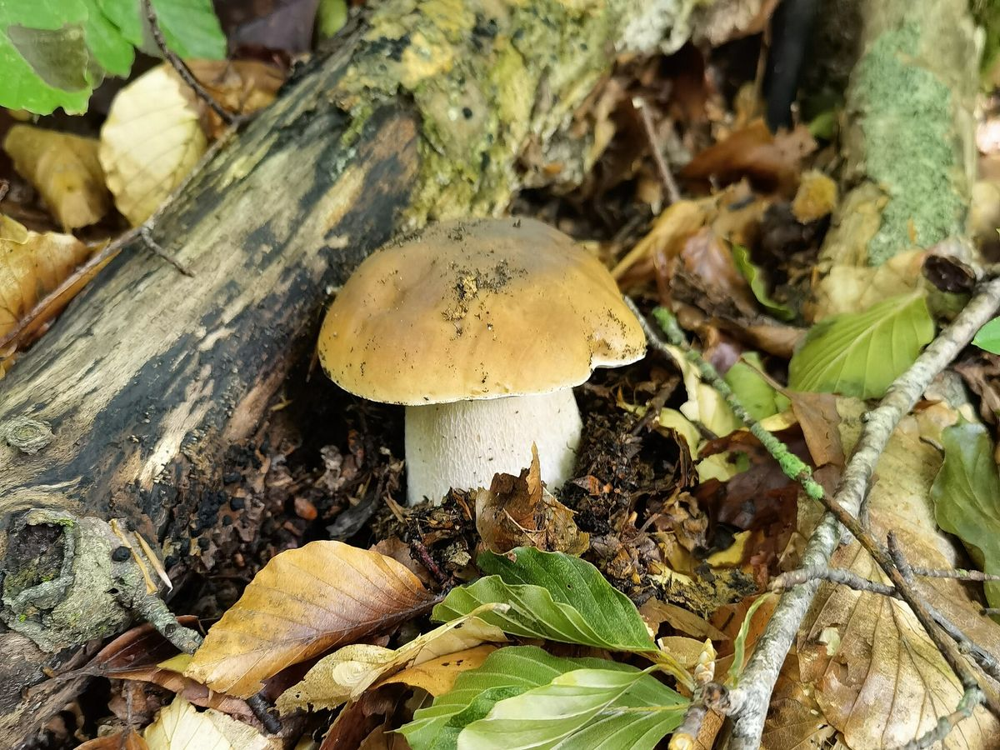
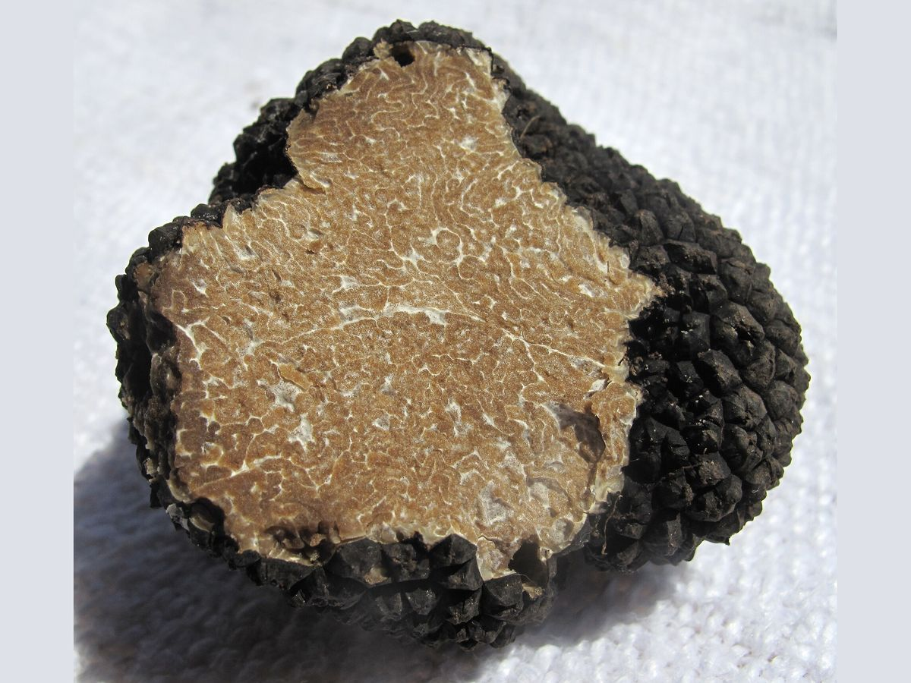
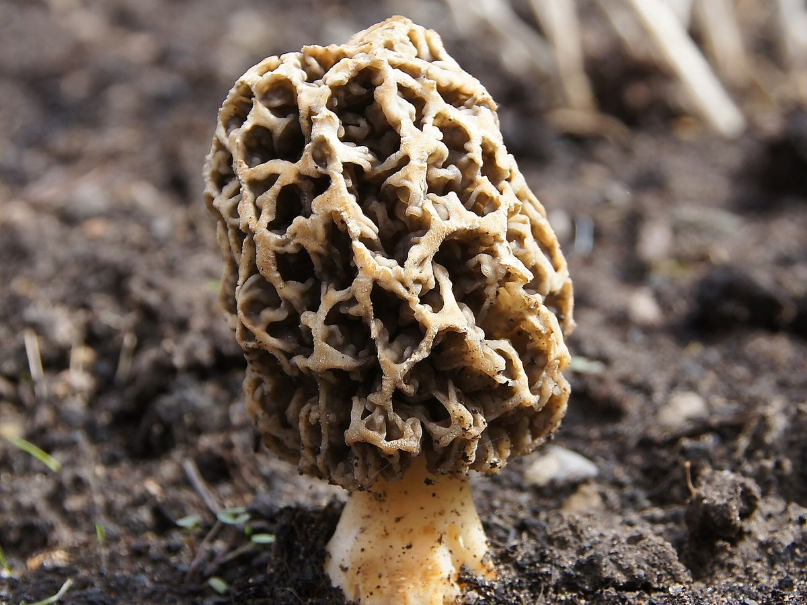
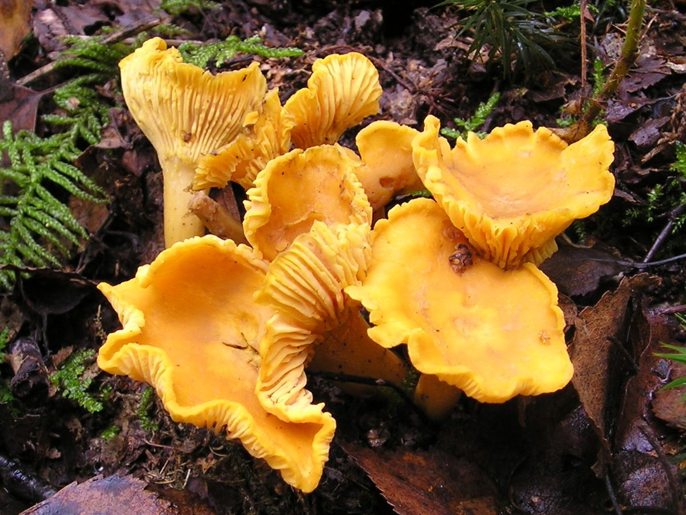

Boletus aereus / Boletus edulis
Ayı Mantarı
Porcini / Cep
Avrupa mutfağının “porcini”si. Fındıksı aroması ve etli yapısıyla taze, kurutulmuş ve dondurulmuş olarak en çok ihraç edilen doğa mantarlarından biri.
Tuber aestivum / Tuber borchii
Summer Truffle / Bianchetto · Diğer adları: Domalan
Toprak altında yetişen, yoğun aromasıyla gurme mutfakların en değerli malzemelerinden biri.

Trüf mantarı meşe, fındık, kayın ve çam gibi ağaçların kökleriyle ortak yaşayarak toprak altında gelişir; genellikle eğitimli köpeklerle bulunur. Siyah, sivri çıkıntılı kabuklu yaz trüfü (Tuber aestivum) yaz aylarında, açık renkli beyaz trüf (Tuber borchii) kış sonu ve ilkbaharda toplanır.
Toplanan ürünler temizlenip boy ve kaliteye göre ayrılarak taze ya da dondurulmuş olarak hazırlanır.
Makarna, risotto, yumurta yemekleri; ince rendelenerek ya da dilimlenerek servis.
Diğer ürünler

Boletus aereus / Boletus edulis
Porcini / Cep
Avrupa mutfağının “porcini”si. Fındıksı aroması ve etli yapısıyla taze, kurutulmuş ve dondurulmuş olarak en çok ihraç edilen doğa mantarlarından biri.

Morchella conica / Morchella esculenta
Morel / Morille
Bal peteği görünümlü şapkasıyla dünyanın en değerli doğa mantarlarından. 2004’ten beri ürün yelpazemizde; taze, kurutulmuş ve dondurulmuş olarak sunulur.

Cantharellus cibarius
Chanterelle / Girolle
Yumurta sarısı rengi ve hafif kayısı kokusuyla tanınan, Avrupa pazarının en sevilen doğa mantarlarından biri.